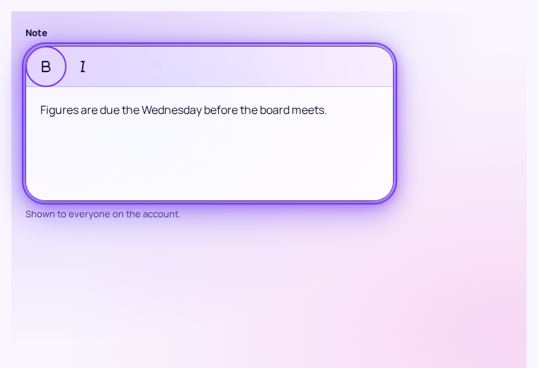
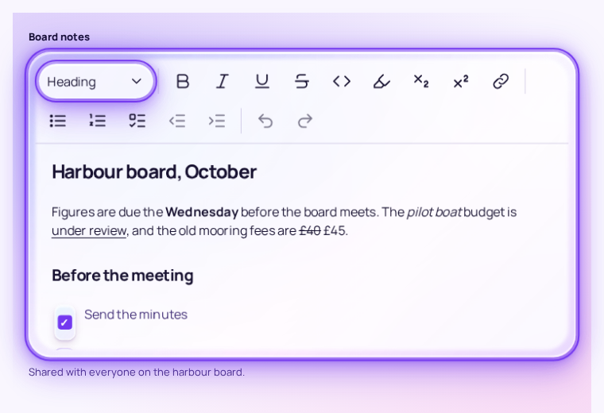
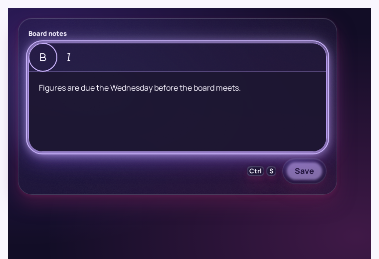
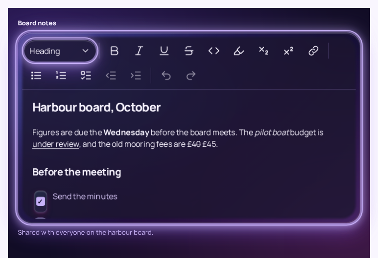
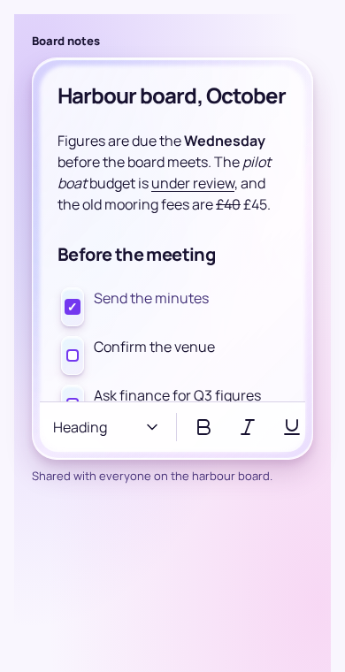
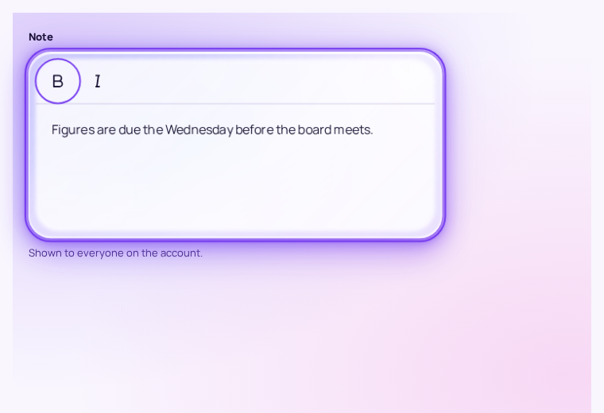

Published
Send the minutes
Confirm the venue
Press Esc to close. Fee £40 £45.
One reading vocabulary, .cr-prose and .cr-editor, so a document reads the same while it is written as after it is published; the editor's frame, toolbar and selection toolbar; and the toolbar's touch placement. The values are those Crystal React's Prose renders and was reviewed at, plus what no platform had: checklists, underline, strikethrough, insertions and deletions, highlights, keys, sub- and superscript.
Board notes
Figures are due the Wednesday before the board meets. The pilot boat budget is under review, and the mooring fee is £40 £45.
Send the minutes
Confirm the venue
Ask finance for Q3 figures
A harbour is only as good as the water in it.
Draft amended: depth at low tide 3.9 m 4.2 m; H2O; the 10th buoy. Press Alt + F10 for the toolbar, or Ctrl+B for bold.
depth = tide.low - silt.estimate.cr-field-shell holding an editor becomes a column at the content radius, padded by its Haze inset. Toolbar: above the text on a fine pointer. Document: real headings, a checklist of native checkboxes (the check is the control's own state, the one place a check means checked), the marks, an insertion underlined and a deletion struck through, so neither rests on colour. The caret is the primary ink. The toolbar here drives the browser's own editing commands so the vocabulary can be tried; the editor a product ships is Crystal React's RichTextEditor.Highlighted, selected, and both.
Prose renders it; the editor's selection is a 28% primary tint under unchanged text, so a highlighted word that is then selected still looks selected.Board notes
Send the minutes
Confirm the venue
The pilot boat budget is under review.
keyboard-inset-height (Crystal React also measures the visual viewport, because iOS reports nothing else). It scrolls sideways rather than wrapping. Indent and Undo are on it because a phone keyboard has no Tab and no Ctrl+Z.Send the minutes
Confirm the venue
Press Esc to close. Fee £40 £45.
.cr-prose, read-only: the checklist keeps its checkboxes (disabled, so their state is still announced), a finished item recedes to the muted ink and is not struck through.




